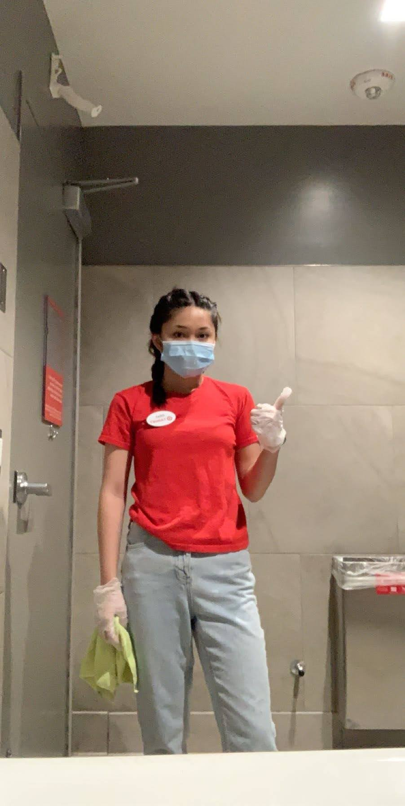
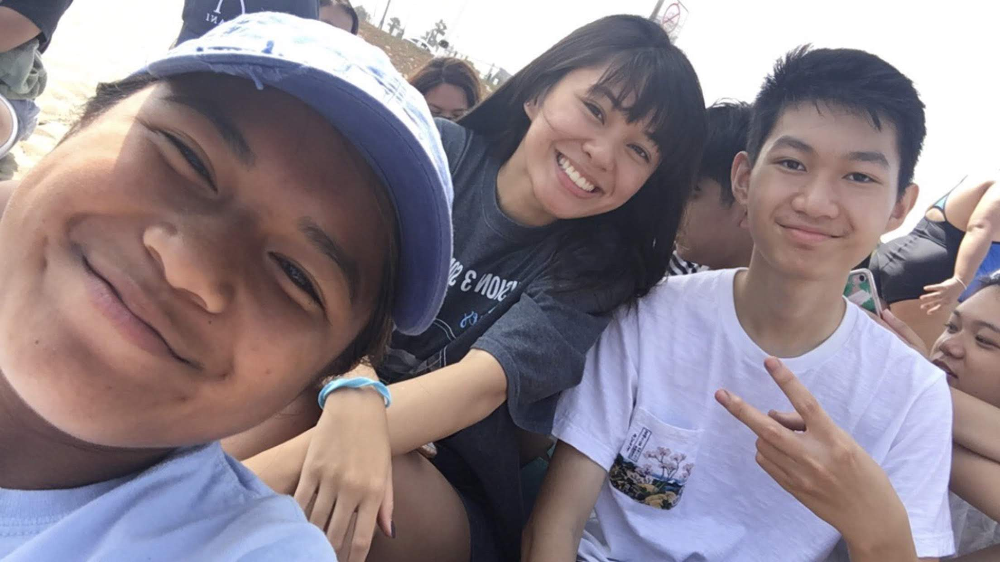
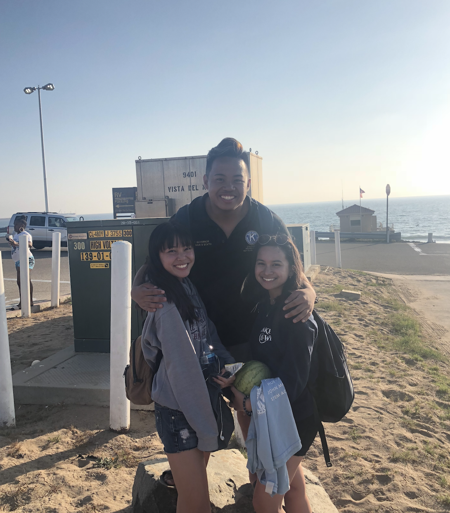
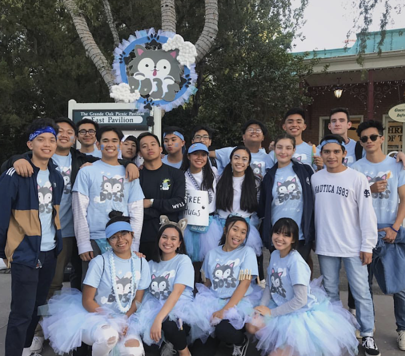

<!DOCTYPE html>
<html lang="en">

<head> 

  <meta charset='UTF-8'>
  <meta name="viewport" content="width=device-width, initial-scale=1, shrink-to-fit=no">
  <link rel="shortcut icon" href="hnet.com-image (2).ico">
  <meta name="description" content="Gilllian Gonzales - Psychology Major - Business and Marketing">
  <meta name="author" content="862170113">

  <title>Gillian Gonzales - Business and Marketing/title>

  <!-- Bootstrap core CSS -->
  <link href="vendor/bootstrap/css/bootstrap.min.css" rel="stylesheet">

  <!-- Custom fonts for this template -->
  <link href="https://fonts.googleapis.com/css?family=Saira+Extra+Condensed:500,700" rel="stylesheet">
  <link href="https://fonts.googleapis.com/css?family=Muli:400,400i,800,800i" rel="stylesheet">
  <link href="vendor/fontawesome-free/css/all.min.css" rel="stylesheet">

  <!-- Custom styles for this template -->
  <link href="css/resume.min.css" rel="stylesheet">

</head>

<body id="page-top">
  <nav class="navbar navbar-expand-lg navbar-dark bg-primary fixed-top" id="sideNav">
    <a class="navbar-brand js-scroll-trigger" href="#page-top">
      <span class="d-block d-lg-none">Gillian Gonzales</span>
      <span class="d-none d-lg-block">
        
      </span>
    </a>
    <button class="navbar-toggler" type="button" data-toggle="collapse" data-target="#navbarSupportedContent" aria-controls="navbarSupportedContent" aria-expanded="false" aria-label="Toggle navigation">
      <span class="navbar-toggler-icon"></span>
    </button>
    <div class="collapse navbar-collapse" id="navbarSupportedContent">
      <ul class="navbar-nav">
        <li class="nav-item">
          <a class="nav-link js-scroll-trigger" href="#about">About</a>
        </li>
        <li class="nav-item">
          <a class="nav-link js-scroll-trigger" href="#experience">Experience</a>
        </li>
        <li class="nav-item">
          <a class="nav-link js-scroll-trigger" href="#education">Education</a>
        </li>
        <li class="nav-item">
          <a class="nav-link js-scroll-trigger" href="#portfolio">Portfolio</a>
        </li>
      </ul>
    </div>
  </div>
  </nav>

  <div class="container-fluid p-0">

    <section class="resume-section p-3 p-lg-5 d-flex align-items-center" id="about">
      <div class="w-100">
        <h1 class="mb-3">Gillian Gonzales
        </h1>
        <div class="subheading mb-5">Business and Marketing</div>
        <p class="lead mb-4">Hello! I am currently a 19 year old student from Los Angeles, California currently attending the University of California, Riverside, as a second year psychology major. Attending Eagle Rock Jr./Sr. High SchoolI was heavily involved with extracurricular activities such as the athletic program, KeyClub, and WISH, supporting the development of my solid time management, social, and commitment skills. I have gained the ability to interact well with others to complete problem solving tasks and am always open to constructive criticism. Amidst the global pandemic and therefore remote learning, I have been adapting to the use of technology as my means of both education and communication with professors and fellow students as I have made the decision to remain home. While I am a full time student, I also have experience being an essential worker; I am currently employed at Target where I participate as both a cashier and barista. Besides work and school, I enjoy spending the rest of my time bullet journaling or creating art as I use both as an expressive outlet to cope with stress; I have adapted to and maintained the habit of bullet journaling for about a years, utilizing it almost everyday to situate how I plan out my weeks in advance and organize whatever tasks that need to be completed. On the other hand, while I have broadened my methods of art from ink and paper to yarn and cloth, both remain to be therapeutic ways of destressing. To balance the seemingly constant heavy workload on my plate, I consistently emphasize the importance of mental health and self care. As mentioned, I partake in activities during my freetime that allow me to destress; however, before current events, specifically the pandemic, I relied heavily on physical activity and wellness as healthy coping mechanisms. My first year of college had consisted of a weekly workout routine that not only helped me maintain my physique, but it had also encouraged me to have a more productive day as I enjoyed going to the gym early in the morning. With this routine, I was able to provide myself with inner motivation and sense of control, which overall contributed to my developing independence. In addition to the benefits of consistently working out I had gained a year ago, getting my first real job in July has solidified the significance of a strong work ethic to adequately manage my previously stated priorities. Engaging in various opportunities as a working student as helped me familiarize myself with situations that require efficient communication skills, problem solving under pressure, and proactivity. The commitments I’ve chosen to make since highschool throughout college continue improve my preparedness for adulthood. Because of this, I now understand the importance of physical activity (or rather productive methods of destressing), time management, and routine in relationship to the quality of work I produce academically and in my physical work environment. While there’s always room for improvement, I can confidently prioritize and manage my time/tasks in an organized and beneficial manner.<br><br>

        Enter bio here<br><br>

        Enter bio here
        </p>
        <div class="social-icons">
          <a target="_blank" id="linkedin" href="https://www.linkedin.com/in/gillian-angela-a6660119b/">
            <i class="fab fa-linkedin-in"></i>
          </a>
          <a target="_blank" id="github" href="https://github.com/Gillian-Gonzales">
            <i class="fab fa-github"></i>
          </a>
          <a target="_blank" id="twitter" href="https://twitter.com/gilly_gonzales">
            <i class="fab fa-twitter"></i>
          </a>
          <a target="_blank" id="email" href="mailto:ggonz126@ucr.edu">
            <i class="fa fa-envelope"></i>
          </a>
        </div>
      </div>
    </section>

    <hr class="m-0">

    <section class="resume-section p-3 p-lg-5 d-flex justify-content-center" id="experience">
      <div class="w-100">
        <h2 class="mb-5">Experience</h2>

        <div class="resume-item d-flex flex-column flex-md-row justify-content-between mb-5 experience">
          <div class="resume-content">
            <h3 class="mb-0">Barista</h3>
            <div class="subheading mb-3"><a target="_blank" href="https://starbucks.com">Starbucks</a></div>
            <p>
              • Took a series of training sessions to learn the foundation of being a barista: how to prepare coffee, teas, pastry cases, and espresso machines in a specific amount of time<br> 
              • Learned and memorized the recipes to various drinks, regular and seasonal<br>
              • Experience with customer service and intense work environments<br>
            </p>
          </div>
          <div class="resume-date text-md-right">
            <span class="text-primary">August 2020 - Present</span>
          </div>
        </div>

        <div class="resume-item d-flex flex-column flex-md-row justify-content-between mb-5 experience">
          <div class="resume-content">
            <h3 class="mb-0">Cashier</h3>
            <div class="subheading mb-3"><a target="_blank" href="https://target.com">Target</a></div>
            <p>
              • Responsible for demonstrating excellent customer services<br>
              • Responsible for checking out customers and providing assistance to them whenever needed<br>
            </p>
          </div>
          <div class="resume-date text-md-right">
            <span class="text-primary">July 2020 - Present</span>
          </div>
        </div>


        <div class="resume-item d-flex flex-column flex-md-row justify-content-between mb-5 experience">
          <div class="resume-content">
            <h3 class="mb-0">Student Volunteer</h3>
            <div class="subheading mb-3"><a target="_blank" href="https://www.instagram.com/erhs.keyclub/"> Eagle Rock Jr./Sr. High School </a></div>
            <p>
            • Participated in volunteer activities with various groups in surrounding communities<br>
            • Interacted and worked with fellow students to create and execute school-wide activities such as spirit weeks<br>
            • Partipated in fundraisers with surrounding restaurants to raise money for certain organizations<br>
            • Sold items (raffle tickets, food items) to raise money for the club<br>

          </p>
          </div>
          <div class="resume-date text-md-right">
            <span class="text-primary">August 2018- January 2019</span>
          </div>
        </div>


      </div>

    </section>

    <hr class="m-0">

    <section class="resume-section p-3 p-lg-5 d-flex align-items-center" id="education">
      <div class="w-100">
        <h2 class="mb-5">Education</h2>

        <div class="resume-item d-flex flex-column flex-md-row justify-content-between mb-5 education">
          <div class="resume-content">
            <h3 class="mb-0">University of California, Riverside</h3>
            <div class="subheading mb-3">Psychology</div>
            <div>Psychology Major</div>
          </div>
          <div class="resume-date text-md-right">
            <span class="text-primary">September 2019 - June 2023</span>
          </div>
        </div>
    </section>

    <hr class="m-0">

    <section class="resume-section p-1 p-lg-5 d-flex align-items-center" id="portfolio">
      <div class="w-100">
        <h2 class="mb-5">Portfolio</h1>
        <center>
          
          <br>
          
          <br>
          
</center>
      </div>
    </section>

    <hr class="m-0">
    <center>&copy; <script type="text/javascript">
  document.write(new Date().getFullYear());
  </script> Gillian Gonzales</center><br>
  </div>
  <!-- Bootstrap core JavaScript -->
  <script src="vendor/jquery/jquery.min.js"></script>
  <script src="vendor/bootstrap/js/bootstrap.bundle.min.js"></script>

  <!-- Plugin JavaScript -->
  <script src="vendor/jquery-easing/jquery.easing.min.js"></script>

  <!-- Custom scripts for this template -->
  <script src="js/resume.min.js"></script>
</body>
</html>
